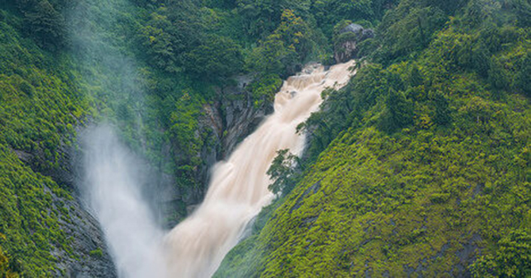
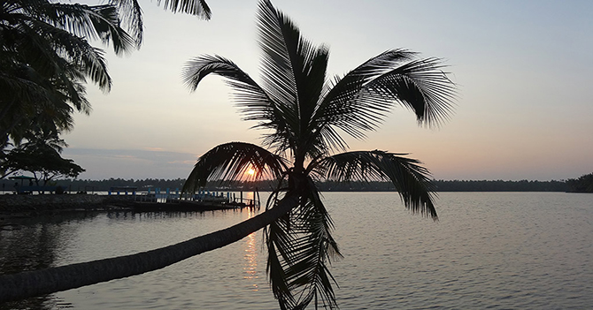
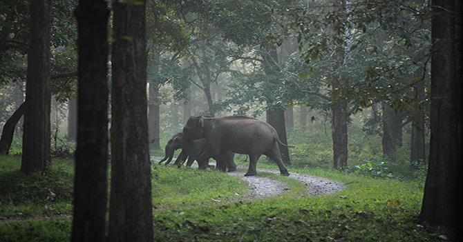
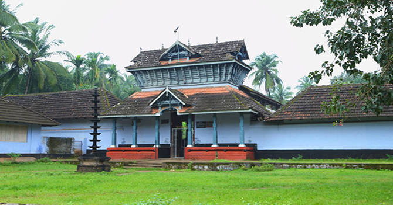
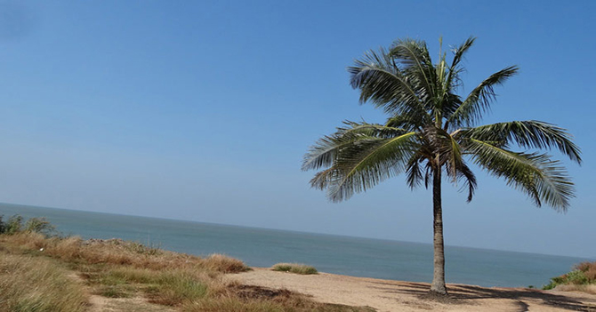

Wayanad district is situated in the northern hills of Kerala. Travellers can camp here and can enjoy the natural beauty of environment. Wayanad is famous for Camping, Trekking, waterfalls, caves. Flora and Fauna here creates a magnificent sight. This place is the favourite place for tourist over the years.
These breathtaking sights attracts the tourists all over the world. If you are a adventure seeker, Cheengari Rock Adventure Center and Edakkal Caves are the must-visit places. The structure of these caves are extremely beautiful.
If you have no idea about how to reach wayanad and are quite confused about it, then let me tell you, you can reach wayanad via road, rail and air.
1. By Road.
If you want to enjoy the road trip then you can hire a private taxi to reach Wayanad comfortably. KSRTC run buses are available from Thiruvanthapuram, Mangakore and Kochi to Wayanad.
2. By Train.
There is no direct train to Wayanad. The closest Railway Station to Wayanad is Kozhikode, 110 km away. You have to reach there first via train. Kozhikode is well connected by rail to major towns such as Kochi, Chennai and Bengaluru. From Kozhikode Railway Station, You can hire a taxi or travel via bus to Wayanad.
2. By Air.
The Closest Airport to Wayanad is Karipur International Airport at Kozhikode. You have to take a flight to Kozhikode which is well connected to most cities in the country. After reaching Kozhikode, You can hire taxi to wayanad outside the airport or you can also book a online cab before boarding to flight.
1. Kalakkayam Waterfalls in Thiruvananthapuram.

Kalakkayam waterfall is situated in the forests near Idinjaar, Thiruvananthapuram. Kalakkayam waterfall is a part of Mankayam stream which originates from Agasthyavanam. It is must-visit place for trekking lovers.
2 .Kavvayi Backwaters.

Kavvayi is a beautiful backwater destination located near Payyanur in the district of Kannur. It is the largest backwater in Kerala and the largest one in North Kerala.
Kavvayi backwater is named after the Kavvayi island close to Payyanur.
The Kavvayi backwater is fed by four backwaters named Kavvayi, Kankol, Vannathichal, Kuppithodu and Kuniyan. These backwaters enhances the beauty of Kavvayi and makes you fall in love with these.
Tourists can do boat riding here and can enjoy the greenery of the surroundings. You can also experience village life here.
3. Tholpetty Wildlife Sanctuary, Wayanad.

Tholpetty Wildlife Sanctuary is located 20 kms east of Mananthavady in the district of Wayanad. Tourists can roam inside the sanctuary in a jeep safari. They can also see bear, tigers, panthers, bison, elephants etc. It is rich in flora and fauna which makes this sanctuary more attractive.
4. Vettakkorumakan Temple, Nilambur.

Vettakkorumakan Temple located in Nilambur is a must-see temple for Hindu devotees.
It is a belief that Lord Vettakkorumakan was son of Lord Shiva and Goddess Parvati when they were in Kirata(Tribal) avatar. The six day festival called "Nilambar Pattu Utsavam" held here and they sings hymns in praise of the Lord.
This festival is celebrated in the month of January.
5. Meenkunnu Beach, Kannur.

Kannur and its beaches always attract tourists towards it. Meenkunnu Beach is located near Azhikode. You can enjoy spicy foods from the sacks near beach. Meenkunnu Beach is ready to capture your heart and moves to a different world.
It is 11.2 km away from Kannur bus stand. You can visit this beach anytime.